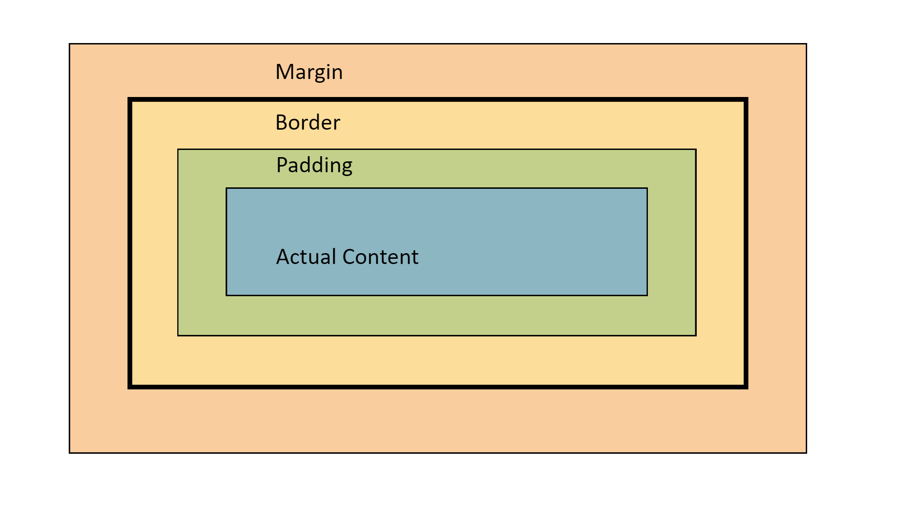

All html elements on a webpage are considered to be boxes. "Box Model" refers to design and layout of these html boxes. Every element in a html document is wrapped with the box model. It consists of content, padding, border, and margin. This is what a typical box model looks like

You must have seen this image in your browser developer tools. The total size of box
is calculated as
Width: content width + padding-left + padding-right + border-left +
border-right
Height: content height + padding-top + padding-down + border-top +
border-down
Let's start with content width. Content width depends on the the display of the element. Block elements have a default width of 100% whereas inline elements have default width of whatever content they hold.
Padding is the space around the element's content. It is the space between the content
and the border. The default padding for all elements is set to 0. Padding can be set
individually by using
padding-top:
padding-right:
padding-bottom:
padding-left:
or by using the shorthand property
padding: (top) (right) (bottom) (left)
Padding values can be set using percentages or lengths.
The border is used to set a border around the elements. By default elements do not
have borders. It can be set using the border shorthandborder: (width) (style) (color)
Now you must be thinking, why is margin not included in the width and height calculations above? That's because margin is a special property because it does not affect our selected element but rather the surrounding content. Margin pushes away the surrounding elements instead of increasing the element size. By default block level elements have some default top and bottom margin set to it. Margin can be set the same way padding is set.
These four parts, the margin, border, padding, and the content, make up the box model for all the html elements.